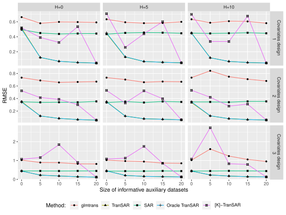
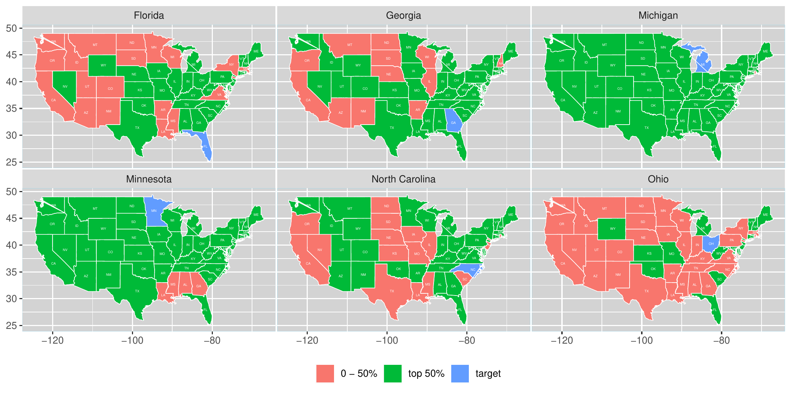

Neighbors affect one another
The matrices \(W_l^{(k)}\) encode spatial links. In the election study, the paper uses row-normalized queen-contiguity weights between counties.
tranSAR
¹ Southern University of Science and Technology² Xiamen University
It is important to incorporate spatial geographic information into U.S. presidential election analysis, especially for swing states. The state-level analysis also faces significant challenges of limited spatial data availability. To address the challenges of spatial dependence and small sample sizes in predicting U.S. presidential election results using spatially dependent data, we propose a novel transfer learning framework within the SAR model, called as tranSAR. Classical SAR model estimation often loses accuracy with small target data samples. Our framework enhances estimation and prediction by leveraging information from similar source data. We introduce a two-stage algorithm, consisting of a transferring stage and a debiasing stage, to estimate parameters and establish theoretical convergence rates for the estimators. Additionally, if the informative source data are unknown, we propose a transferable source detection algorithm using spatial residual bootstrap to maintain spatial dependence and derive its detection consistency. Simulation studies show our algorithm substantially improves the classical two-stage least squares estimator. We demonstrate our method’s effectiveness in predicting outcomes in U.S. presidential swing states, where it outperforms traditional methods. In addition, our tranSAR model predicts that the Republican Party would win the 2024 U.S. presidential election.
Abstract from the published JBES article. The 2024 election prediction is a historical application reported in that paper.
01 / The idea
A target state may have too few counties for precise estimation. Other states can provide useful information, but their demographic effects and spatial dependence need not match the target. Pooling every source can introduce negative transfer.
Each domain has its own spatial weights and coefficients; \(k=0\) denotes the target.
The matrices \(W_l^{(k)}\) encode spatial links. In the election study, the paper uses row-normalized queen-contiguity weights between counties.
Source data help when their parameters are close enough to the target. The method screens sources rather than treating every other state as equally useful.
02 / The method
With an informative source set \(\mathcal A\), the estimator has two stages. When the source set is unknown, a spatial residual bootstrap procedure screens it before the final fit.
Use spatial residual bootstrap to assess source usefulness while preserving the spatial dependence structure.
Selected set \(\widehat{\mathcal A}\)Pool information from selected domains to obtain the first-stage estimate. Regularization supports sparse, high-dimensional settings.
Pooled estimate \(\widehat\omega\)Estimate a correction using the target data, so the final model can adjust for differences between target and sources.
Target correction \(\widehat\delta\)Estimation theory
The paper derives convergence rates for the estimator and studies a 2SLS loss. The rates depend on source sample sizes, parameter sparsity, and the similarity between source and target domains.
Source detection
Detection consistency is established under the paper’s regularity and source-separation conditions. It is an asymptotic result, rather than a promise of improvement in every finite sample.
The informative source set is defined through parameter differences, for example \(\|\theta_0-\omega_0^{(k)}\|_1\leq h\). A larger tolerance can include more data and more source-target mismatch.
The theory controls the spatial system, design and error distributions, first-stage estimation, instruments, and source separation. The simulation and election results evaluate particular settings under this framework.
See the theoretical results and assumptions ↗03 / Simulations
The first simulation compares target-only SAR, tranSAR, an oracle source set, pooling all sources, and glmtrans. It varies the number of informative sources, covariate design, and source-target differences.

The oracle curve uses knowledge of the true informative set. It is a reference benchmark; the source-screening procedure does not have that information.
04 / Election results
The paper uses 2016 election information with demographic and geographic data to evaluate predictions for the 2020 election. Each swing state serves as a target, with other states available as sources.
| State | SAR | tranSAR |
|---|
Where error is higher
County-level RMSE is 0.10966 for tranSAR and 0.10118 for SAR. The state-level absolute bias is also larger for tranSAR in this example.
A difficult outcome
Both methods have a 0% correct winner-prediction rate across the 20 reported runs, even though tranSAR has lower county-level RMSE. Different metrics answer different questions.
05 / Source selection
The reported source-selection maps differ by target. Geographic proximity is only part of the picture: shared demographic or economic structure can also make a source useful.

The published version also reports an application to the 2024 election, using demographic information from 2022 and election data from 2020. It reports a Republican Party national prediction. This historical exercise is separate from the 2020 comparison shown above.
See Figure 5 and the paper’s discussion of limitations ↗Read & build
@article{zeng2026transar,
title = {Transfer Learning for Spatial Autoregressive Models
with Application to U.S. Presidential Election Prediction},
author = {Zeng, Hao and Zhong, Wei and Xu, Xingbai},
journal = {Journal of Business \& Economic Statistics},
year = {2026},
volume = {44},
number = {4},
pages = {1233--1247},
doi = {10.1080/07350015.2026.2627302},
url = {https://doi.org/10.1080/07350015.2026.2627302}
}